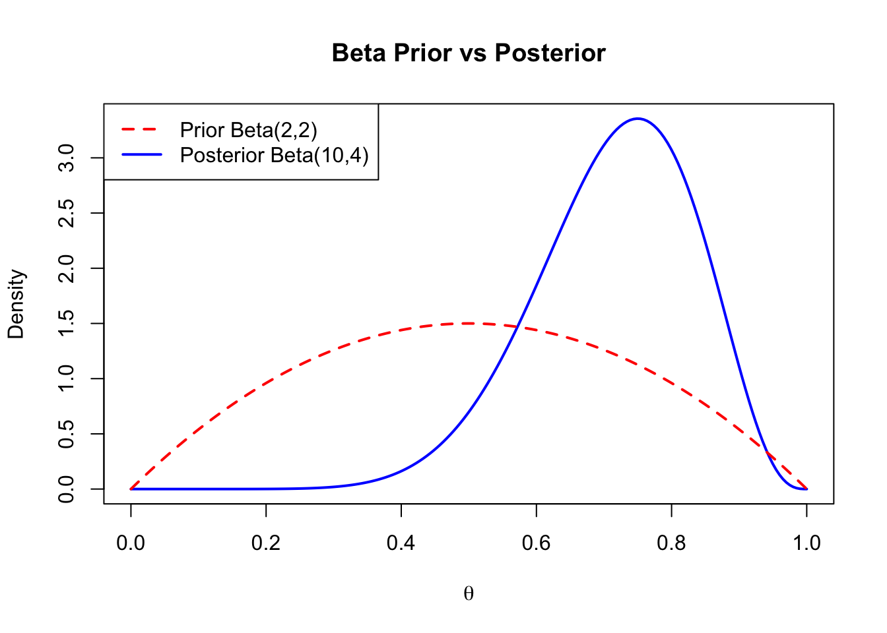
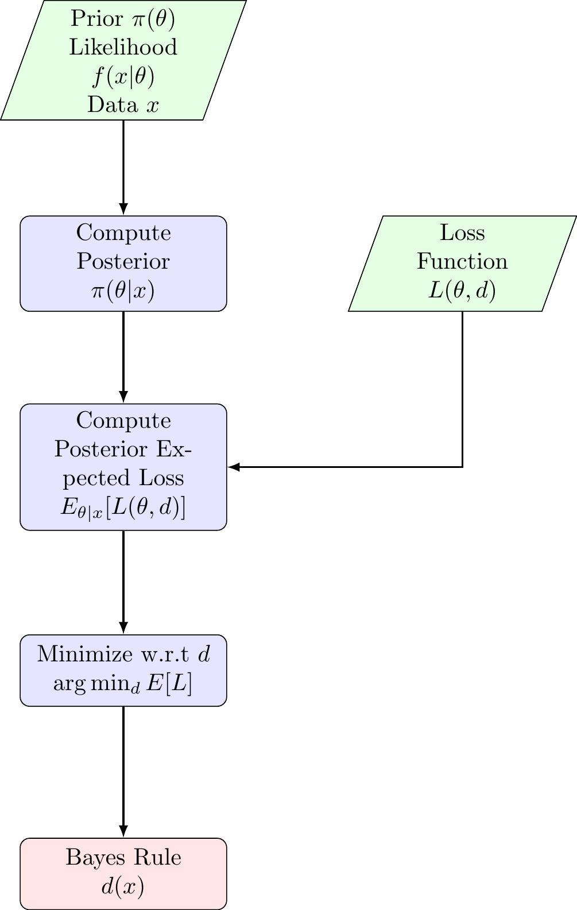
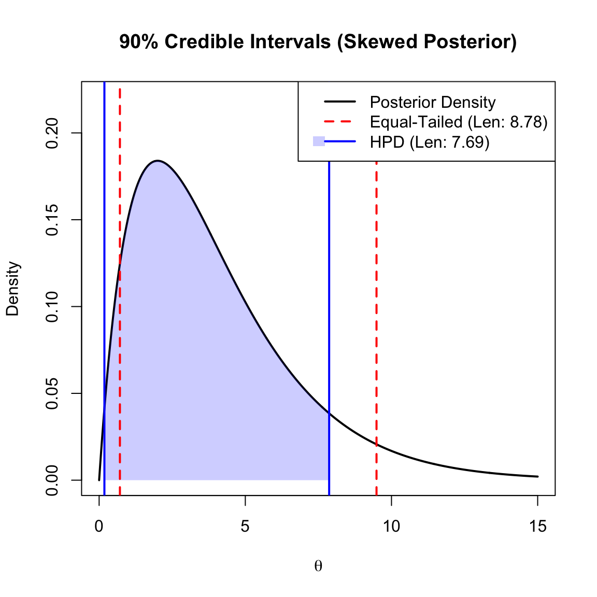
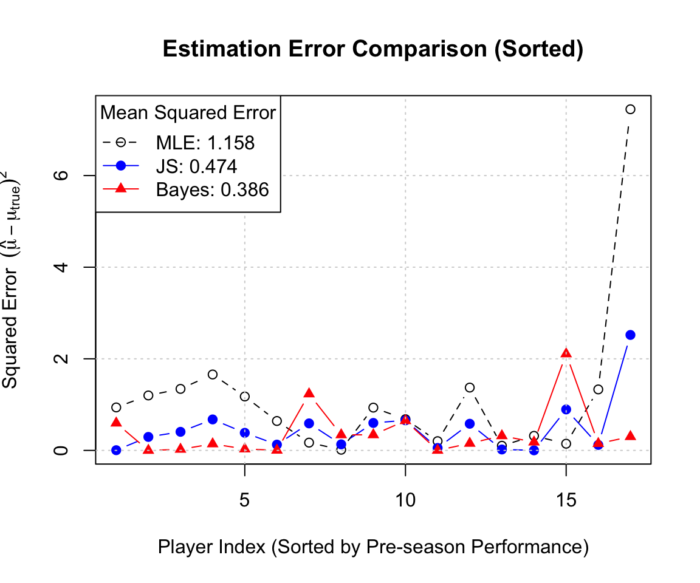
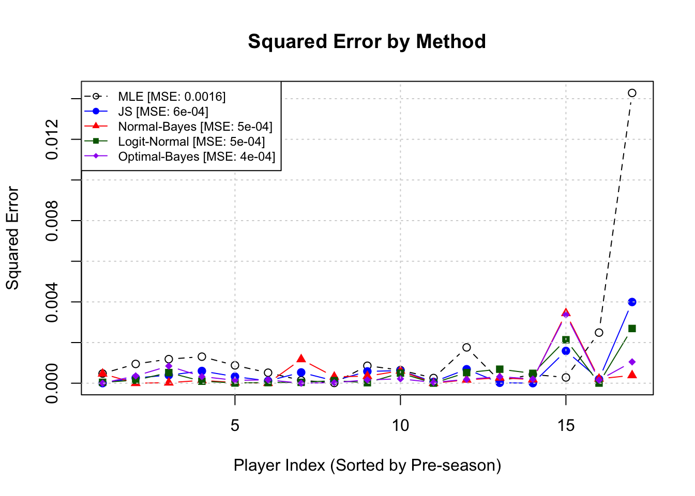
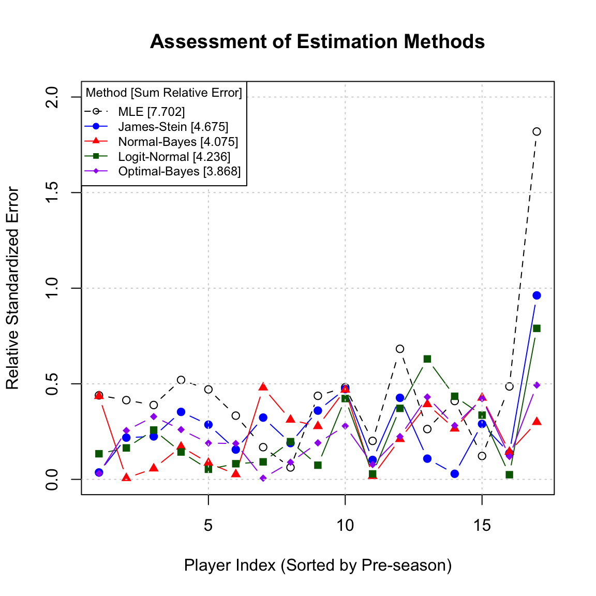

3 Bayesian Inference
3.1 Fundamental Elements of Bayesian Inference
The foundation of Bayesian inference relies on the relationship between the prior distribution, the likelihood of the data, and the posterior distribution. This relationship is governed by Bayes’ Theorem (or Law).
Definition 3.1 (Posterior Distribution) Suppose we have a parameter \(\theta\) with a prior distribution denoted by \(\pi(\theta)\). If we observe data \(x\) drawn from a distribution with probability density function (pdf) \(f(x; \theta)\), then the posterior density of \(\theta\) given the data \(x\) is defined as:
\[ \pi(\theta|x) = \frac{\pi(\theta) f(x;\theta)}{m(x)} \]
where \(m(x)\) is the marginal distribution (or marginal likelihood) of the data, calculated as: \[ m(x) = \int_{\Theta} \pi(\theta) f(x;\theta) d\theta \]
In this context, \(m(x)\) acts as a normalizing constant. Since it depends only on the data \(x\) and not on the parameter \(\theta\), it ensures that the posterior density integrates to 1 but does not influence the shape of the posterior distribution.
Thus, we often state the proportional relationship:
\[ \pi(\theta|x) \propto \pi(\theta) f(x;\theta) \]
Example 3.1 (Binomial-beta Conjugacy) Consider an experiment where \(x|\theta \sim \text{Bin}(n, \theta)\). The likelihood function is:
\[ f(x|\theta) = \binom{n}{x} \theta^x (1-\theta)^{n-x} \]
Suppose we choose a Beta distribution as the prior for \(\theta\), such that \(\theta \sim \text{Beta}(a, b)\). The prior density is:
\[ \pi(\theta) = \frac{\theta^{a-1}(1-\theta)^{b-1}}{B(a,b)} \]
where \(B(a,b)\) is the Beta function defined as \(\int_{0}^{1} \theta^{a-1}(1-\theta)^{b-1} d\theta\).
To find the posterior, we multiply the prior and the likelihood:
\[ \pi(\theta|x) \propto \theta^{a-1}(1-\theta)^{b-1} \cdot \theta^x (1-\theta)^{n-x} \]
Combining terms with the same base:
\[ \pi(\theta|x) \propto \theta^{a+x-1} (1-\theta)^{b+n-x-1} \]
We can recognize this kernel as a Beta distribution. Therefore, we conclude that the posterior distribution is:
\[ \theta|x \sim \text{Beta}(a+x, b+n-x) \]
Properties of the Posterior:
The posterior mean is: \[E(\theta|x) = \frac{a+x}{a+b+n}\] As \(n \to \infty\), this approximates the maximum likelihood estimate \(\frac{x}{n}\).
The posterior variance is: \[\text{Var}(\theta|x) = \frac{(a+x)(n+b-x)}{(a+b+n)^2(a+b+n+1)}\] For large \(n\), this approximates \(\frac{x(n-x)}{n^3} = \frac{\hat{p}(1-\hat{p})}{n}\).
Numerical Illustration:
Suppose we are estimating a probability \(\theta\).
- Prior: \(\theta \sim \text{Beta}(2, 2)\) (Mean = 0.5).
- Data: 10 trials, 8 successes (\(n=10, x=8\)).
- Posterior: \(\theta|x \sim \text{Beta}(2+8, 2+2) = \text{Beta}(10, 4)\) (Mean \(\approx\) 0.71).
The plot below shows the prior (dashed) and posterior (solid) densities.
Example 3.2 (Normal-normal Conjugacy (known Variance)) Let \(X_1, X_2, \dots, X_n\) be independent and identically distributed (i.i.d.) variables such that \(X_i \sim N(\mu, \sigma^2)\), where \(\sigma^2\) is known.
We assign a Normal prior to the mean \(\mu\): \(\mu \sim N(\mu_0, \sigma_0^2)\).
To find the posterior \(\pi(\mu|x_1, \dots, x_n)\), let \(x = (x_1, \dots, x_n)\). The posterior is proportional to:
\[ \pi(\mu|x) \propto \pi(\mu) \cdot f(x|\mu) \]
\[ \propto \exp\left\{-\frac{(\mu-\mu_0)^2}{2\sigma_0^2}\right\} \cdot \exp\left\{-\sum_{i=1}^n \frac{(x_i-\mu)^2}{2\sigma^2}\right\} \]
Posterior Precision:
It is often more convenient to work with precision (the inverse of variance). Let:
- \(\tau_0 = 1/\sigma_0^2\) (Prior precision)
- \(\tau = 1/\sigma^2\) (Data precision)
- \(\tau_1 = 1/\sigma_1^2\) (Posterior precision)
The relationship is additive:
\[ \tau_1 = \tau_0 + n\tau \]
\[ \text{Posterior Precision} = \text{Prior Precision} + \text{Precision of Data} \]
The posterior mean \(\mu_1\) is a weighted average of the prior mean and the sample mean:
\[ \mu_1 = \frac{\mu_0 \tau_0 + n\bar{x}\tau}{\tau_0 + n\tau} \]
So, the posterior distribution is:
\[ \mu|x_1, \dots, x_n \sim N\left( \frac{\mu_0 \tau_0 + n\bar{x}\tau}{\tau_0 + n\tau}, \frac{1}{\tau_0 + n\tau} \right) \]
Numerical Illustration:
Suppose we estimate a mean height \(\mu\).
- Known Variance: \(\sigma^2 = 100\) (\(\tau = 0.01\)).
- Prior: \(\mu \sim N(175, 25)\) (Precision \(\tau_0 = 0.04\)).
- Data: \(n=10, \bar{x}=180\). (Total data precision \(n\tau = 0.1\)).
- Posterior:
- Precision \(\tau_1 = 0.04 + 0.1 = 0.14\).
- Variance \(\sigma_1^2 \approx 7.14\).
- Mean \(\mu_1 = \frac{175(0.04) + 180(0.1)}{0.14} \approx 178.6\).
The plot below illustrates the prior (dashed) and posterior (solid) normal densities.

Example 3.3 (Discrete Posterior Calculation) Consider the following table where we calculate the posterior probabilities for a discrete parameter space.
Let the parameter \(\theta\) take values \(\{1, 2, 3\}\) with prior probabilities \(\pi(\theta)\). Let the data \(x\) take values \(\{0, 1, 2, \dots\}\).
Given:
- Prior \(\pi(\theta)\): \(\pi(1)=1/3, \pi(2)=1/3, \pi(3)=1/3\).
- Likelihood \(\pi(x|\theta)\):
- If \(\theta=1\), \(x \sim \text{Uniform on } \{0, 1\}\) (Prob = 1/2).
- If \(\theta=2\), \(x \sim \text{Uniform on } \{0, 1, 2\}\) (Prob = 1/3).
- If \(\theta=3\), \(x \sim \text{Uniform on } \{0, 1, 2, 3\}\) (Prob = 1/4).
Suppose we observe \(x=2\). The calculation of the posterior probabilities is summarized in the table below:
| \(\theta=1\) | \(\theta=2\) | \(\theta=3\) | Sum | |
|---|---|---|---|---|
| Prior \(\pi(\theta)\) | \(1/3\) | \(1/3\) | \(1/3\) | \(1\) |
| Likelihood \(\pi(x=2|\theta)\) | \(0\) | \(1/3\) | \(1/4\) | - |
| Product \(\pi(\theta)\pi(x|\theta)\) | \(0\) | \(1/9\) | \(1/12\) | \(7/36\) |
| Posterior \(\pi(\theta|x)\) | \(0\) | \(4/7\) | \(3/7\) | \(1\) |
The marginal sum (evidence) is calculated as \(0 + 1/9 + 1/12 = 4/36 + 3/36 = 7/36\). The posterior values are obtained by dividing the product row by this sum.
Example 3.4 (Normal with Unknown Mean and Variance) Consider \(X_1, \dots, X_n \sim N(\mu, 1/\tau)\), where both \(\mu\) and the precision \(\tau\) are unknown.
We use a Normal-Gamma conjugate prior:
\(\tau \sim \text{Gamma}(\alpha, \beta)\) \[\pi(\tau) \propto \tau^{\alpha-1} e^{-\beta\tau}\]
\(\mu|\tau \sim N(\nu, 1/(k\tau))\) \[\pi(\mu|\tau) \propto \tau^{1/2} e^{-\frac{k\tau}{2}(\mu-\nu)^2}\]
The joint prior is the product of the conditional and the marginal: \[ \pi(\mu, \tau) \propto \tau^{\alpha - 1/2} \exp\left\{ -\tau \left( \beta + \frac{k}{2}(\mu - \nu)^2 \right) \right\} \]
Derivation of the Posterior:
First, we write the likelihood in terms of the sufficient statistics \(\bar{x}\) and \(S_{xx} = \sum (x_i - \bar{x})^2\): \[ L(\mu, \tau|x) \propto \tau^{n/2} \exp\left\{ -\frac{\tau}{2} \left[ S_{xx} + n(\bar{x}-\mu)^2 \right] \right\} \]
Multiplying the prior by the likelihood gives the joint posterior: \[ \begin{aligned} \pi(\mu, \tau | x) &\propto \tau^{\alpha - 1/2} e^{-\beta\tau} e^{-\frac{k\tau}{2}(\mu-\nu)^2} \cdot \tau^{n/2} e^{-\frac{\tau}{2}S_{xx}} e^{-\frac{n\tau}{2}(\mu-\bar{x})^2} \\ &\propto \tau^{\alpha + n/2 - 1/2} \exp\left\{ -\tau \left[ \beta + \frac{S_{xx}}{2} + \frac{1}{2}\left( k(\mu-\nu)^2 + n(\mu-\bar{x})^2 \right) \right] \right\} \end{aligned} \]
Next, we complete the square for the terms involving \(\mu\) inside the brackets. It can be shown that: \[ k(\mu-\nu)^2 + n(\mu-\bar{x})^2 = (k+n)\left(\mu - \frac{k\nu+n\bar{x}}{k+n}\right)^2 + \frac{nk}{n+k}(\bar{x}-\nu)^2 \]
Substituting this back into the joint density and grouping terms that do not depend on \(\mu\): \[ \pi(\mu, \tau | x) \propto \underbrace{\tau^{\alpha + n/2 - 1} \exp\left\{ -\tau \left[ \beta + \frac{S_{xx}}{2} + \frac{nk}{2(n+k)}(\bar{x}-\nu)^2 \right] \right\}}_{\text{Marginal of } \tau} \cdot \underbrace{\tau^{1/2} \exp\left\{ -\frac{(k+n)\tau}{2} \left( \mu - \frac{k\nu+n\bar{x}}{k+n} \right)^2 \right\}}_{\text{Conditional of } \mu|\tau} \]
Results:
By inspecting the factored equation above, we identify the updated parameters:
Marginal Posterior of \(\tau\): The first part corresponds to a Gamma kernel \(\tau^{\alpha' - 1} e^{-\beta'\tau}\). \[\tau|x \sim \text{Gamma}(\alpha', \beta')\] where \(\alpha' = \alpha + n/2\) and \(\beta' = \beta + \frac{1}{2}\sum(x_i-\bar{x})^2 + \frac{nk}{2(n+k)}(\bar{x}-\nu)^2\).
Conditional Posterior of \(\mu\): The second part corresponds to a Normal kernel with precision \(k'\tau\). \[\mu|\tau, x \sim N(\nu', 1/(k'\tau))\] where \(k' = k + n\) and \(\nu' = \frac{k\nu + n\bar{x}}{k+n}\).
3.2 Finding Bayes Rules via Minimizing Posterior Expected Loss
The general form of Bayes rule is derived by minimizing risk.
Definition 3.2 (Risk Function and Bayes Risk)
- Risk Function: \(R(\theta, d) = \int_{X} L(\theta, d(x)) f(x;\theta) dx\)
- Bayes Risk: The expected risk with respect to the prior. \[r(\pi, d) = \int_{\Theta} R(\theta, d) \pi(\theta) d\theta\]
Theorem 3.1 (Minimization of Bayes Risk) Minimizing the Bayes risk \(r(\pi, d)\) is equivalent to minimizing the posterior expected loss for each observed \(x\). That is, the Bayes rule \(d(x)\) satisfies: \[ d(x) = \underset{a}{\arg\min} \ E_{\theta|x} [ L(\theta, a) ] \]
Proof. We start by writing the Bayes risk essentially as a double integral over the parameters and the data. Substituting the definition of the risk function \(R(\theta, d)\):
\[ \begin{aligned} r(\pi, d) &= \int_{\Theta} R(\theta, d) \pi(\theta) d\theta \\ &= \int_{\Theta} \left[ \int_{X} L(\theta, d(x)) f(x|\theta) dx \right] \pi(\theta) d\theta \end{aligned} \]
Assuming the conditions for Fubini’s Theorem are met, we switch the order of integration:
\[ r(\pi, d) = \int_{X} \left[ \int_{\Theta} L(\theta, d(x)) f(x|\theta) \pi(\theta) d\theta \right] dx \]
Recall that the joint density can be factored as \(f(x, \theta) = f(x|\theta)\pi(\theta) = \pi(\theta|x)m(x)\), where \(m(x)\) is the marginal density of the data. Substituting this into the inner integral:
\[ \begin{aligned} r(\pi, d) &= \int_{X} \left[ \int_{\Theta} L(\theta, d(x)) \pi(\theta|x) m(x) d\theta \right] dx \\ &= \int_{X} m(x) \left[ \int_{\Theta} L(\theta, d(x)) \pi(\theta|x) d\theta \right] dx \end{aligned} \]
Since the marginal density \(m(x)\) is non-negative, minimizing the total integral \(r(\pi, d)\) with respect to the decision rule \(d(\cdot)\) is equivalent to minimizing the term inside the brackets for every \(x\) (specifically where \(m(x) > 0\)).
The term inside the brackets is the Posterior Expected Loss:
\[ \int_{\Theta} L(\theta, d(x)) \pi(\theta|x) d\theta = E_{\theta|x} [ L(\theta, d(x)) ] \]
Important
Therefore, to minimize the Bayes risk, one just need to choose \(d(x)\) to minimize the posterior expected loss for each \(x\).
The following diagram summarizes the general workflow for deriving a Bayes estimator:

3.3 Special Bayes Rules
3.3.1 Squared Error Loss (point Estimate)
\[L(\theta, a) = (\theta - a)^2\]
To find the optimal estimator \(d(x)\), we minimize the posterior expected loss \(E_{\theta|x}[(\theta - d(x))^2]\). Taking the derivative with respect to \(d\) and setting it to 0:
\[-2 E_{\theta|x}(\theta - d) = 0 \implies d(x) = E(\theta|x)\]
Result: The Bayes rule under squared error loss is the posterior mean.
3.3.2 Absolute Error Loss
\[L(\theta, d) = |\theta - d|\]
To find the Bayes rule, we minimize the posterior expected loss:
\[ \psi(d) = E_{\theta|x} [ |\theta - d| ] = \int_{-\infty}^{\infty} |\theta - d| \, dF(\theta|x) \]
where \(F(\theta|x)\) is the cumulative distribution function (CDF) of the posterior. Splitting the integral at the decision point \(d\):
\[ \psi(d) = \int_{-\infty}^{d} (d - \theta) \, dF(\theta|x) + \int_{d}^{\infty} (\theta - d) \, dF(\theta|x) \]
We find the minimum by analyzing the rate of change of \(\psi(d)\) with respect to \(d\). Differentiating (or taking the subgradient for non-differentiable points):
\[ \frac{d}{dd} \psi(d) = \int_{-\infty}^{d} 1 \, dF(\theta|x) - \int_{d}^{\infty} 1 \, dF(\theta|x) = P(\theta \le d|x) - P(\theta > d|x) \]
Setting this derivative to zero implies we seek a point where the probability mass to the left equals the probability mass to the right:
\[ P(\theta \le d|x) = P(\theta > d|x) \]
Since the total probability is 1, this condition simplifies to finding \(d\) such that the cumulative probability is \(1/2\).
General Case (Discrete or Mixed Distributions)
In cases where the posterior distribution is discrete or has jump discontinuities (e.g., the CDF jumps from 0.4 to 0.6 at a specific value), an exact solution to \(F(d) = 0.5\) may not exist. To generalize, the Bayes rule is defined as any median \(m\) of the posterior distribution.
A median is formally defined as any value \(m\) that satisfies the following two conditions simultaneously:
- \(P(\theta \le m|x) \ge \frac{1}{2}\)
- \(P(\theta \ge m|x) \ge \frac{1}{2}\)
Result: The Bayes rule under absolute error loss is the posterior median.
3.3.3 Weighted Absolute Error Loss (min-normalization)
\[L(\theta, d) = \frac{|\theta - d|}{\min(\theta, 1-\theta)}\]
This loss function penalizes errors extremely heavily when the true parameter \(\theta\) is near the boundaries (0 or 1). Because the denominator approaches zero at the boundaries, the “cost” of an error becomes infinite, forcing the estimator to be very cautious (conservative) if the posterior has significant mass near 0 or 1.
To find the Bayes rule, we minimize the posterior expected loss. Let \(\pi(\theta|x)\) denote the posterior density.
\[ \psi(d) = E_{\theta|x} \left[ \frac{|\theta - d|}{\min(\theta, 1-\theta)} \right] = \int \frac{|\theta - d|}{\min(\theta, 1-\theta)} \pi(\theta|x) \, d\theta \]
Let \(w(\theta) = \frac{1}{\min(\theta, 1-\theta)}\). We can view this integral as an expectation with respect to a weighted posterior density \(\pi^*(\theta|x)\):
\[ \pi^*(\theta|x) \propto w(\theta) \pi(\theta|x) = \frac{\pi(\theta|x)}{\min(\theta, 1-\theta)} \]
Result: The Bayes rule is the median of the weighted posterior distribution \(\pi^*(\theta|x)\).
3.3.3.0.1 Importance Sampling for Weighted Median
Goal: Estimate the median of \(\pi^*(\theta|x) \propto w(\theta)\pi(\theta|x)\) using samples from \(\pi(\theta|x)\).
Sample: Generate \(M\) independent draws \(\theta_1, \dots, \theta_M\) from the standard posterior \(\pi(\theta|x)\).
Weight: For each \(i = 1, \dots, M\), compute the importance weight: \[ W_i = w(\theta_i) = \frac{1}{\min(\theta_i, 1-\theta_i)} \]
Sort: Reorder the samples such that \(\theta_{(1)} \le \theta_{(2)} \le \dots \le \theta_{(M)}\). Permute the weights \(W_{(1)}, \dots, W_{(M)}\) to match this ordering.
Accumulate: Compute the cumulative weights: \[ S_k = \sum_{j=1}^k W_{(j)} \quad \text{for } k=1, \dots, M \]
Select: Find the smallest index \(k^*\) such that the cumulative weight exceeds half the total weight: \[ k^* = \min \{ k : S_k \ge 0.5 \times S_M \} \]
Output: Return the estimator \(\hat{\delta} = \theta_{(k^*)}\).
Numerical Example: Beta(2, 10)
We compare the “exact” weighted median (found by numerical integration) with the Monte Carlo estimate for a skewed distribution.
Code
# 1. Setup Parameters
alpha <- 2
beta <- 10
# Standard Posterior Density: Dbeta(x, 2, 10)
# 2. Define the Weight Function (using MIN)
w <- function(theta) { 1 / pmin(theta, 1 - theta) }
# 3. Calculate "theoretical" Weighted Median (via Numerical Integration)
# Unnormalized Weighted Density
weighted_dens_unnorm <- function(theta) {
w(theta) * dbeta(theta, alpha, beta)
}
# Find Normalization Constant C
C <- integrate(weighted_dens_unnorm, 0, 1)$value
# Define CDF of the Weighted Distribution
weighted_cdf <- function(q) {
integrate(weighted_dens_unnorm, 0, q)$value / C
}
# Find Root of Cdf(m) - 0.5 = 0
# Note: Expanded Search Interval Because Median Might Shift Near Boundaries
theo_median <- uniroot(function(x) weighted_cdf(x) - 0.5, c(0.001, 0.999))$root
# 4. Calculate Monte Carlo Weighted Median
set.seed(123)
M <- 100000
theta_samples <- rbeta(M, alpha, beta)
# Compute Weights
weights <- w(theta_samples)
# Sort Samples and Weights
ord <- order(theta_samples)
sorted_theta <- theta_samples[ord]
sorted_weights <- weights[ord]
# Find Index Where Cumulative Weight Crosses 50%
cum_weights <- cumsum(sorted_weights)
total_weight <- sum(sorted_weights)
idx <- which(cum_weights >= 0.5 * total_weight)[1]
mc_median <- sorted_theta[idx]
# 5. Comparison Table
comparison_df <- data.frame(
"Theoretical Weighted" = theo_median,
"Monte Carlo Weighted" = mc_median,
"Standard Posterior" = qbeta(0.5, alpha, beta),
check.names = FALSE
)
knitr::kable(comparison_df, digits = 3, align = "c")| Theoretical Weighted | Monte Carlo Weighted | Standard Posterior |
|---|---|---|
| 0.067 | 0.067 | 0.148 |
3.3.4 Hypothesis Testing (0-1 Loss)
Consider the hypothesis test \(H_0: \theta \in \Theta_0\) versus \(H_1: \theta \in \Theta_1\). We define the decision space as \(\mathcal{A} = \{0, 1\}\), where \(a=0\) means accepting \(H_0\) and \(a=1\) means rejecting \(H_0\) (accepting \(H_1\)).
Case 1: 0-1 Loss
The standard 0-1 loss function assigns a penalty of 1 for an incorrect decision and 0 for a correct one:
| State of Nature (\(\theta\)) | Action \(a=0\) (Accept \(H_0\)) | Action \(a=1\) (Reject \(H_0\)) |
|---|---|---|
| \(\theta \in \Theta_0\) (\(H_0\) True) | \(0\) (Correct) | \(1\) (Type I Error) |
| \(\theta \in \Theta_1\) (\(H_1\) True) | \(1\) (Type II Error) | \(0\) (Correct) |
To find the Bayes rule, we minimize the posterior expected loss for a given \(x\), denoted as \(E_{\theta|x}[L(\theta, a)]\).
Expected Loss for choosing \(a=0\) (Accept \(H_0\)): \[ E_{\theta|x}[L(\theta, 0)] = 0 \cdot P(\theta \in \Theta_0|x) + 1 \cdot P(\theta \in \Theta_1|x) = P(\theta \in \Theta_1|x) \]
Expected Loss for choosing \(a=1\) (Reject \(H_0\)): \[ E_{\theta|x}[L(\theta, 1)] = 1 \cdot P(\theta \in \Theta_0|x) + 0 \cdot P(\theta \in \Theta_1|x) = P(\theta \in \Theta_0|x) \]
The Bayes rule selects the action with the smaller expected loss. Thus, we choose \(a=1\) if: \[ P(\theta \in \Theta_0|x) \le P(\theta \in \Theta_1|x) \] This confirms that under 0-1 loss, the Bayes rule simply selects the hypothesis with the higher posterior probability.
Case 2: General Loss (Asymmetric Costs)
In many practical applications, the cost of errors is not symmetric. For example, a Type I error (false rejection) might be more costly than a Type II error. Let \(c_1\) be the cost of a Type I error and \(c_2\) be the cost of a Type II error. Usually, we normalize one cost to 1.
| State of Nature (\(\theta\)) | Action \(a=0\) (Accept \(H_0\)) | Action \(a=1\) (Reject \(H_0\)) |
|---|---|---|
| \(\theta \in \Theta_0\) (\(H_0\) True) | \(0\) | \(c\) (Type I Error) |
| \(\theta \in \Theta_1\) (\(H_1\) True) | \(1\) (Type II Error) | \(0\) |
We again calculate the posterior expected loss:
Expected Loss for \(a=0\): \[E[L(\theta, 0)|x] = 0 \cdot P(\Theta_0|x) + 1 \cdot P(\Theta_1|x) = P(\Theta_1|x)\]
Expected Loss for \(a=1\): \[E[L(\theta, 1)|x] = c \cdot P(\Theta_0|x) + 0 \cdot P(\Theta_1|x) = c P(\Theta_0|x)\]
We reject \(H_0\) (\(a=1\)) if the expected loss of doing so is lower: \[ c P(\Theta_0|x) \le P(\Theta_1|x) \]
Since \(P(\Theta_1|x) = 1 - P(\Theta_0|x)\), we can rewrite this condition as: \[ c P(\Theta_0|x) \le 1 - P(\Theta_0|x) \implies (1+c) P(\Theta_0|x) \le 1 \] \[ P(\Theta_0|x) \le \frac{1}{1+c} \]
Result: With asymmetric costs, we accept \(H_1\) only if the posterior probability of the null hypothesis is sufficiently small (below the threshold \(\frac{1}{1+c}\)). If the cost of false rejection \(c\) is high, we require stronger evidence against \(H_0\).
3.3.5 Classification Prediction (categorical Parameter)
In classification problems, the parameter of interest is a discrete class label \(\theta\) (often denoted as \(y\)) taking values in a set of categories \(\{1, 2, \dots, K\}\). The goal is to predict the true class label based on observed features \(x\).
We typically employ the 0-1 loss function, which assigns a penalty of 1 for a misclassification and 0 for a correct prediction:
\[L(\theta, \hat{\theta}) = \begin{cases} 0 & \text{if } \hat{\theta} = \theta \ (\text{Correct Classification}) \\ 1 & \text{if } \hat{\theta} \neq \theta \ (\text{Misclassification}) \end{cases}\]
To find the optimal classification rule (the Bayes Classifier), we minimize the posterior expected loss, which is equivalent to minimizing the probability of misclassification.
\[ E_{\theta|x}[L(\theta, \hat{\theta})] = \sum_{\theta} L(\theta, \hat{\theta}) \pi(\theta|x) \]
Since the loss is 1 only when the predicted class \(\hat{\theta}\) differs from the true class \(\theta\), this sum simplifies to:
\[ E_{\theta|x}[L(\theta, \hat{\theta})] = \sum_{\theta \neq \hat{\theta}} 1 \cdot \pi(\theta|x) = P(\theta \neq \hat{\theta} | x) = 1 - P(\theta = \hat{\theta} | x) \]
Minimizing the misclassification rate \(1 - P(\theta = \hat{\theta} | x)\) is mathematically equivalent to maximizing the probability of being correct, \(P(\theta = \hat{\theta} | x)\).
Result: The Bayes rule for classification is to predict the class with the highest posterior probability. While this is technically the Maximum A Posteriori (MAP) estimator, in the context of machine learning and pattern recognition, this decision rule is known as the Bayes Optimal Classifier.
\[ \hat{\theta}_{\text{Bayes}}(x) = \underset{k \in \{1, \dots, K\}}{\arg\max} \ P(\theta = k | x) \]
3.3.6 Interval Estimation and Highest Posterior Density (HPD)
We can motivate the choice of a Credible Interval by defining a specific loss function for interval estimation. Suppose we seek an estimate \(d\) and specify a tolerance \(\delta > 0\). We define the loss function as:
\[ L(\theta, d) = \begin{cases} 0 & \text{if } |\theta - d| \le \delta \\ 1 & \text{if } |\theta - d| > \delta \end{cases} \]
The Expected Posterior Loss is the posterior probability that \(\theta\) lies outside the interval \((d - \delta, d + \delta)\). Therefore, minimizing the loss is equivalent to finding the interval of fixed length \(2\delta\) that maximizes the posterior probability:
\[ P(d - \delta \le \theta \le d + \delta \mid x) \]
In practice, we typically reverse this formulation: instead of fixing the length \(2\delta\), we fix the coverage probability \(1-\alpha\) (e.g., 0.95) and seek the interval with the shortest possible length. This results in the Highest Posterior Density (HPD) interval, defined as the region where the posterior density exceeds a certain threshold \(c\):
\[ C_{HPD} = \{ \theta : \pi(\theta \mid x) \ge c \} \]
This HPD interval is optimal because it includes the “most likely” values of \(\theta\) and, for a unimodal distribution, provides the narrowest interval for a given confidence level.
Comparison with Equal-Tailed Intervals:
- Equal-Tailed Interval: We simply cut off \(\alpha/2\) probability from each tail of the distribution. This is easy to compute but may not be the shortest interval if the distribution is skewed.
- HPD Interval: This is the shortest possible interval for the given coverage. For unimodal distributions, the probability density at the two endpoints of the HPD interval is identical.
The plot below illustrates a skewed posterior distribution (Gamma). Notice how the HPD Interval (Blue) is shifted toward the mode (the peak) to capture the highest density values, resulting in a shorter interval length compared to the Equal-Tailed Interval (Red).

3.4 Finding Minimax Rules with Bayes Rules
Theorem 2.1 states that if a Bayes estimator \(\delta^\pi\) (derived from a prior \(\pi\)) yields a constant risk \(R(\theta, \delta^\pi) = c\) across the entire parameter space \(\Theta\), then that estimator is necessarily minimax.
This result is a cornerstone of decision theory because it provides a sufficient condition for minimaxity. While the minimax criterion focuses on the “worst-case scenario” by minimizing the maximum possible risk, the Bayes criterion focuses on the “average-case scenario” relative to a prior. When the risk is constant, these two perspectives align: the average risk equals the maximum risk, and no other estimator can achieve a lower maximum without also having a lower Bayes risk, which would contradict the optimality of the Bayes rule.
Example 3.5 (Binomial Minimax Estimator) Let \(X \sim \text{Bin}(n, \theta)\) and \(\theta \sim \text{Beta}(a, b)\). The squared error loss is \(L(\theta, d) = (\theta - d)^2\). The Bayes estimator is the posterior mean: \[d(x) = \frac{a+x}{a+b+n}\]
We calculate the risk \(R(\theta, d)\):
\[ R(\theta, d) = E_x \left[ \left( \theta - \frac{a+x}{a+b+n} \right)^2 \right] \]
Let \(c = a+b+n\). \[R(\theta, d) = \frac{1}{c^2} E \left[ (c\theta - a - x)^2 \right]\]
Using the bias-variance decomposition and knowing \(E(x) = n\theta\) and \(E(x^2) = (n\theta)^2 + n\theta(1-\theta)\), we expand the risk function. To make the risk constant (independent of \(\theta\)), we set the coefficients of \(\theta\) and \(\theta^2\) to zero.
Solving the resulting system of equations yields: \[a = b = \frac{\sqrt{n}}{2}\]
Thus, the minimax estimator is: \[d(x) = \frac{x + \sqrt{n}/2}{n + \sqrt{n}}\]
This differs from the standard MLE \(\hat{p} = x/n\) and the uniform prior Bayes estimator (\(a=b=1\)).
According to Theorem 2.2, let \(\{\delta_n\}\) be a sequence of Bayes rules with respect to priors \(\{\pi_n\}\), and let \(r(\pi_n, \delta_n)\) be the associated Bayes risks. If there exists a rule \(\delta_0\) such that \[ \sup_{\theta} R(\theta, \delta_0) \le \lim_{n \to \infty} r(\pi_n, \delta_n) \] then \(\delta_0\) is a minimax estimator.
Example 3.6 (Exponential Minimax Estimation) Let \(X_1, \dots, X_n \overset{iid}{\sim} \text{Exp}(\theta)\) with mean \(\theta\). We consider the Scale-Invariant Loss Function:
\[ L(\theta, \delta) = \left( \frac{\delta}{\theta} - 1 \right)^2 \]
We propose the estimator \(\delta_0(X) = \frac{\sum X_i}{n+1}\). Consider a sequence of priors \(\pi_k \sim \text{Inverse-Gamma}(\alpha_k, \beta_k)\) for \(\theta\), where the density is given by \(\pi(\theta) \propto \theta^{-\alpha_k - 1} e^{-\beta_k / \theta}\).
We will show that \(\delta_0\) is a minimax estimator by deriving the Bayes estimator for this sequence and comparing the risks.
Posterior Analysis and Moments
Let \(T = \sum X_i\). The likelihood is \(L(\theta|X) = \theta^{-n} e^{-T/\theta}\). Multiplying by the prior \(\pi_k(\theta)\), the posterior density is:
\[ \pi(\theta | X) \propto \theta^{-(n + \alpha_k) - 1} e^{-(T + \beta_k)/\theta} \]
This is an Inverse-Gamma distribution with parameters \(\alpha^* = n + \alpha_k\) and \(\beta^* = T + \beta_k\). Using the properties of the Inverse-Gamma distribution, the required posterior moments are:
\[ E[\theta^{-1} | X] = \frac{n + \alpha_k}{T + \beta_k}, \quad E[\theta^{-2} | X] = \frac{(n + \alpha_k)(n + \alpha_k + 1)}{(T + \beta_k)^2} \]
The posterior expected loss is \(E[ L(\theta, \delta) | X ] = \delta^2 E[\theta^{-2} | X] - 2\delta E[\theta^{-1} | X] + 1\).
Derivation of the Bayes Estimator
Minimizing the posterior expected loss with respect to \(\delta\) yields \(\delta_{\pi_k} = \frac{E[\theta^{-1} | X]}{E[\theta^{-2} | X]}\). Substituting the moments derived above:
\[ \delta_{\pi_k}(X) = \frac{ \frac{n + \alpha_k}{T + \beta_k} }{ \frac{(n + \alpha_k)(n + \alpha_k + 1)}{(T + \beta_k)^2} } = \frac{T + \beta_k}{n + \alpha_k + 1} \]
Bayes Risk Limit
The Bayes risk \(r(\pi_k)\) is the expected value of the minimum posterior loss. Substituting \(\delta_{\pi_k}\) back into the loss equation:
\[ r(\pi_k | X) = 1 - \frac{(E[\theta^{-1}|X])^2}{E[\theta^{-2}|X]} = 1 - \frac{n + \alpha_k}{n + \alpha_k + 1} = \frac{1}{n + \alpha_k + 1} \]
Since this does not depend on \(X\), the integrated Bayes risk is \(r(\pi_k) = \frac{1}{n + \alpha_k + 1}\). Taking the limit as the prior parameters approach zero (\(\alpha_k \to 0\)):
\[ \lim_{k \to \infty} r(\pi_k) = \frac{1}{n+1} \]
Minimax Verification
Finally, we calculate the frequentist risk for the candidate estimator \(\delta_0(X) = \frac{T}{n+1}\). Let \(Y = T/\theta \sim \text{Gamma}(n, 1)\).
\[ R(\theta, \delta_0) = E \left[ \left( \frac{Y}{n+1} - 1 \right)^2 \right] = \text{Var}\left(\frac{Y}{n+1}\right) + \left(E\left[\frac{Y}{n+1}\right]-1\right)^2 \]
With \(E[Y]=n\) and \(\text{Var}(Y)=n\), the risk is:
\[ R(\theta, \delta_0) = \frac{n}{(n+1)^2} + \left( \frac{n}{n+1} - 1 \right)^2 = \frac{1}{n+1} \]
Since the risk of \(\delta_0\) is constant and equals the limit of the Bayes risks (\(\frac{1}{n+1}\)), \(\delta_0\) is a minimax estimator.
3.5 Stein’s Paradox and the James-stein Estimator
In high-dimensional estimation (\(p \ge 3\)), the Maximum Likelihood Estimator (MLE) is inadmissible under squared error loss. The James-Stein Estimator dominates the MLE, meaning it achieves lower risk for all values of \(\theta\).
Consider the setting:
- Data: \(X \sim N_p(\theta, I)\)
- Prior: \(\theta \sim N_p(0, \tau^2 I)\)
- Jame-Stein Estimator:
\[ d^{JS}(x) = \left( 1 - \frac{p-2}{||x||^2} \right) x \]
3.5.1 Stein’s Lemma
Notation: The Divergence Operator
The symbol \(\nabla \cdot g(X)\) (read as “divergence of \(g\)”) is simply a shorthand notation for the sum of the partial derivatives:
\[ \nabla \cdot g(X) \equiv \sum_{i=1}^p \frac{\partial g_i(X)}{\partial X_i} \]
It represents the total “outward flow” of the vector field \(g\) from a local point.
Lemma 3.1 (Stein’s Lemma) Let \(X \sim N_p(\theta, I)\) be a multivariate normal random vector, and let \(g: \mathbb{R}^p \to \mathbb{R}^p\) be a continuously differentiable function such that \(E[| \partial g_i / \partial X_i |] < \infty\). Then:
\[ E_\theta \left[ (X - \theta)^T g(X) \right] = E_\theta \left[ \nabla \cdot g(X) \right] = E_\theta \left[ \sum_{i=1}^p \frac{\partial g_i(X)}{\partial X_i} \right] \]
The term \(\nabla \cdot g(X)\) represents the divergence of the vector field \(g\), which intuitively measures the local rate of expansion or outward flux of the function \(g\) at the point \(X\); in this statistical context, it quantifies the aggregate sensitivity of the function components to changes in the data.
Proof.
It suffices to show the result for a single component in 1 dimension, as the multivariate case follows by summation due to independence. Let \(X_i \sim N(\theta_i, 1)\) and let \(\phi(t)\) be the standard normal density function. The joint density is \(f(x) = \prod \phi(x_j - \theta_j)\).
Consider the expectation of the \(i\)-th term: \[ E_\theta [ (X_i - \theta_i) g_i(X) ] = \int_{\mathbb{R}^p} (x_i - \theta_i) g_i(x) \left( \prod_{j=1}^p \phi(x_j - \theta_j) \right) dx \]
Focusing on the integral with respect to \(x_i\): \[ \int_{-\infty}^{\infty} (x_i - \theta_i) \phi(x_i - \theta_i) g_i(x) dx_i \]
Recall that \(\phi'(z) = -z \phi(z)\). Therefore, \((x_i - \theta_i) \phi(x_i - \theta_i) = - \frac{\partial}{\partial x_i} \phi(x_i - \theta_i)\). We use integration by parts with: \[ u = g_i(x) \quad \text{and} \quad dv = - \frac{\partial}{\partial x_i} \phi(x_i - \theta_i) dx_i \]
Thus: \[ \int_{-\infty}^{\infty} g_i(x) (x_i - \theta_i) \phi(x_i - \theta_i) dx_i = \left[ -g_i(x) \phi(x_i - \theta_i) \right]_{-\infty}^{\infty} + \int_{-\infty}^{\infty} \frac{\partial g_i(x)}{\partial x_i} \phi(x_i - \theta_i) dx_i \]
Assuming \(g(x)\) does not grow exponentially fast, the boundary term vanishes. The remaining integral is the expectation of the partial derivative. Summing over all \(i=1 \dots p\) gives the divergence \(\nabla \cdot g(X)\).In high-dimensional statistics, Stein’s Lemma is often expressed using the inner product of the random vector and the function vector field, which highlights the alignment between the data and the transformation.
Lemma 3.2 (Stein’s Lemma (Vector Form)) Let \(X \sim N_p(\theta, I)\) and \(g: \mathbb{R}^p \to \mathbb{R}^p\) be a weakly differentiable function. Then:
\[ E_\theta [ (X - \theta)^T g(X) ] = E_\theta [ \nabla \cdot g(X) ] \]
Equivalently, the expectation of the inner product \(X^T g(X)\) can be written as:
\[ E_\theta [ X^T g(X) ] = \theta^T E_\theta [ g(X) ] + E_\theta [ \nabla \cdot g(X) ] \]
Remark: Connection to Non-Central \(\chi^2\) Moments
This identity provides an elegant way to derive the mean of a non-central chi-square distribution without performing complex integration.
Consider the case where \(g(X) = X\). Here, \(\nabla \cdot X = p\). Plugging this into the vector form:
\[ E_\theta [ X^T X ] = \theta^T E_\theta [ X ] + E_\theta [ p ] \]
Since \(E_\theta [ X ] = \theta\), we immediately obtain:
\[ E_\theta [ \|X\|^2 ] = \|\theta\|^2 + p \]
This is precisely the mean of a \(\chi^2_p(\lambda)\) distribution with non-centrality parameter \(\lambda = \|\theta\|^2\). Essentially, Stein’s Lemma decomposes the second moment into the signal component (\(\|\theta\|^2\)) and the geometric noise component (\(p\)).
Lemma 3.3 (Stein’s Lemma for Radial Fields) Let \(X \sim N_p(\theta, I)\) and consider a radial vector field of the form \(g(X) = c(\|X\|^2)X\), where \(c: \mathbb{R} \to \mathbb{R}\) is a differentiable scalar function. Then:
\[ E_\theta \left[ (X - \theta)^T g(X) \right] = E_\theta \left[ p \cdot c(\|X\|^2) + 2 \|X\|^2 \cdot c'(\|X\|^2) \right] \]
where \(c'(z) = \frac{d}{dz}c(z)\).
Proof.
We apply the general Stein’s Lemma by calculating the divergence of the radial field \(g(X) = c(\|X\|^2)X\). Using the product rule for divergence:
\[ \nabla \cdot (c(\|X\|^2)X) = c(\|X\|^2) (\nabla \cdot X) + X^T (\nabla c(\|X\|^2)) \]
Step 1: The geometric spread. The divergence of the identity map \(X\) in \(p\) dimensions is simply the sum of the partial derivatives of each component with respect to itself: \[ \nabla \cdot X = \sum_{i=1}^p \frac{\partial X_i}{\partial X_i} = p \]
Step 2: The radial stretch. To find \(\nabla c(\|X\|^2)\), we use the chain rule. Let \(h(X) = \|X\|^2 = \sum X_i^2\). Then \(\nabla h(X) = 2X\). \[ \nabla c(\|X\|^2) = c'(\|X\|^2) \nabla (\|X\|^2) = 2 c'(\|X\|^2) X \]
Substituting this back into the divergence formula: \[ \begin{aligned} \nabla \cdot g(X) &= p \cdot c(\|X\|^2) + X^T (2 c'(\|X\|^2) X) \\ &= p \cdot c(\|X\|^2) + 2 c'(\|X\|^2) \|X\|^2 \end{aligned} \]
Taking the expectation of both sides completes the proof.
Connection to the \(\chi^2\) Distribution
This version of the lemma is particularly useful because when \(\theta = 0\), the quantity \(\|X\|^2\) follows a central \(\chi^2_p\) distribution.
- Verifying the Mean: If we set \(c(\|X\|^2) = 1\), then \(g(X) = X\). The lemma gives \(E_0[\|X\|^2] = p + 2\|X\|^2(0) = p\), which is the expected value of a \(\chi^2_p\) variable.
- The James-Stein Weight: If we set \(c(\|X\|^2) = \frac{1}{\|X\|^2}\), then \(c'(z) = -\frac{1}{z^2}\). \[ \nabla \cdot g(X) = \frac{p}{\|X\|^2} + 2 \|X\|^2 \left( -\frac{1}{\|X\|^4} \right) = \frac{p-2}{\|X\|^2} \] This explains why the \(p-2\) constant appears in the James-Stein estimator—it is the net result of \(p\) dimensions of “spreading” minus 2 dimensions of “radial thinning.”
Example 3.7 (An Example for Verifying Stein’s Lemma) Let \(X \sim N(\theta, 1)\) be a univariate normal random variable with unit variance. Let \(g(x) = x^2\). Stein’s Lemma states that: \[ E_\theta \left[ (X-\theta) g(X) \right] = E_\theta \left[ g'(X) \right] \]
Step 1: Calculate the Right-Hand Side (RHS) First, we find the derivative of \(g(x)\): \[ g'(x) = \frac{d}{dx} (x^2) = 2x \]
Now, compute the expectation of the derivative: \[ \text{RHS} = E_\theta [g'(X)] = E_\theta [2X] = 2 E_\theta [X] = 2\theta \]
Step 2: Calculate the Left-Hand Side (LHS) We evaluate the expectation of the cross-product term. Substitute \(X = Z + \theta\), where \(Z \sim N(0, 1)\) is a standard normal variable. Then \(X - \theta = Z\).
\[ \begin{aligned} \text{LHS} &= E_\theta \left[ (X-\theta) X^2 \right] \\ &= E \left[ Z (Z + \theta)^2 \right] \quad \text{where } Z \sim N(0,1) \\ &= E \left[ Z (Z^2 + 2\theta Z + \theta^2) \right] \\ &= E [Z^3] + 2\theta E [Z^2] + \theta^2 E [Z] \end{aligned} \]
We use the known moments of the standard normal distribution \(Z\):
- \(E[Z] = 0\) (mean)
- \(E[Z^2] = 1\) (variance)
- \(E[Z^3] = 0\) (skewness of symmetric distribution)
Substituting these values back: \[ \text{LHS} = 0 + 2\theta(1) + \theta^2(0) = 2\theta \]
Conclusion We observe that: \[ \text{LHS} = 2\theta \quad \text{and} \quad \text{RHS} = 2\theta \] Thus, Stein’s Lemma holds for this specific case.
Example 3.8 (A Radial Field Example Verifying Stein’s Lemma) Let \(X \sim N_p(\theta, I)\) and \(g(X) = \|X\|^2 X\). We verify the Radial Field Lemma: \[E_\theta \left[ (X - \theta)^T g(X) \right] = E_\theta \left[ p \cdot c(\|X\|^2) + 2 \|X\|^2 \cdot c'(\|X\|^2) \right]\]
Here, \(c(z) = z\), which implies \(c'(z) = 1\).
RHS (Divergence): Using the radial formula: \[ \begin{aligned} \nabla \cdot g(X) &= p(\|X\|^2) + 2\|X\|^2(1) \\ &= (p+2)\|X\|^2 \end{aligned} \] The expectation is \((p+2)E_\theta[\|X\|^2]\). Since \(\|X\|^2\) is a non-central \(\chi^2_p\) with non-centrality parameter \(\|\theta\|^2\), we know \(E_\theta[\|X\|^2] = p + \|\theta\|^2\). Thus, \(\text{RHS} = (p+2)(p + \|\theta\|^2)\).
LHS (Alignment): \[ \begin{aligned} E_\theta \left[ (X-\theta)^T (\|X\|^2 X) \right] &= E_\theta \left[ \|X\|^2 (X^T X - \theta^T X) \right] \\ &= E_\theta \left[ \|X\|^4 - \theta^T X \|X\|^2 \right] \end{aligned} \]
To simplify, let \(X = \theta + Z\) where \(Z \sim N_p(0, I)\). Recall the moments of the non-central chi-square distribution or expand the terms: \(E[\|X\|^4] = p(p+2) + 2(p+2)\|\theta\|^2 + \|\theta\|^4\). For the cross term \(E[\theta^T X \|X\|^2]\), we find it equals \(\|\theta\|^4 + (p+2)\|\theta\|^2\).
Subtracting these: \[ \begin{aligned} \text{LHS} &= [p(p+2) + 2(p+2)\|\theta\|^2 + \|\theta\|^4] - [\|\theta\|^4 + (p+2)\|\theta\|^2] \\ &= p(p+2) + (p+2)\|\theta\|^2 \\ &= (p+2)(p + \|\theta\|^2) \end{aligned} \]
Conclusion
The results match exactly. The alignment of the cubic radial field with the noise is perfectly predicted by the sum of its geometric expansion (\(p \|X\|^2\)) and its radial stretch (\(2 \|X\|^2\)).
3.5.2 Inadmissibility of the MLE in High Dimensions (Stein’s Phenomenon)
Theorem 3.2 Let \(X \sim N_p(\theta, I)\) be a \(p\)-dimensional random vector with \(p \ge 3\). Under the squared error loss function \(L(\theta, d) = ||\theta - d||^2\), the standard Maximum Likelihood Estimator \(d^0(X) = X\) is inadmissible.
Proof (Proof of Inadmissibility). To show that \(d^0(X) = X\) is inadmissible, we compare its risk to that of the James-Stein estimator \(d^{JS}(X)\).
Let \(g(X) = c(\|X\|^2)X\) where \(c(\|X\|^2) = \frac{p-2}{\|X\|^2}\). We can write the James-Stein estimator as \(d^{JS}(X) = X - g(X)\).
The risk is the expected squared error loss:
\[ \begin{aligned} R(\theta, d^{JS}) &= E_\theta \left[ || (X - \theta) - g(X) ||^2 \right] \\ &= E_\theta \left[ ||X - \theta||^2 \right] - 2 E_\theta \left[ (X-\theta)^T g(X) \right] + E_\theta \left[ ||g(X)||^2 \right] \end{aligned} \]
The first term is the risk of the MLE, which is \(p\).
For the second term, we apply Stein’s Lemma for Radial Fields (Lemma 3.3). We first compute the scalar function and its derivative: \[c(z) = \frac{p-2}{z} \implies c'(z) = -\frac{p-2}{z^2}\]
Substituting these into the radial divergence formula from Lemma 3.3: \[ \begin{aligned} \nabla \cdot g(X) &= p \cdot c(\|X\|^2) + 2 \|X\|^2 \cdot c'(\|X\|^2) \\ &= p \left( \frac{p-2}{\|X\|^2} \right) + 2 \|X\|^2 \left( -\frac{p-2}{\|X\|^4} \right) \\ &= \frac{p(p-2)}{\|X\|^2} - \frac{2(p-2)}{\|X\|^2} \\ &= \frac{(p-2)^2}{\|X\|^2} \end{aligned} \]
Applying the lemma to the cross-term: \[2 E_\theta \left[ (X-\theta)^T g(X) \right] = 2 E_\theta [ \nabla \cdot g(X) ] = 2(p-2)^2 E_\theta \left[ \frac{1}{\|X\|^2} \right]\]
The third term in the risk expansion is the squared magnitude of the shrinkage: \[\|g(X)\|^2 = \left\| \frac{p-2}{\|X\|^2} X \right\|^2 = \frac{(p-2)^2}{\|X\|^4} \|X\|^2 = \frac{(p-2)^2}{\|X\|^2}\]
Substituting these results back into the risk equation: \[ \begin{aligned} R(\theta, d^{JS}) &= p - 2(p-2)^2 E_\theta \left[ \frac{1}{\|X\|^2} \right] + (p-2)^2 E_\theta \left[ \frac{1}{\|X\|^2} \right] \\ &= p - (p-2)^2 E_\theta \left[ \frac{1}{\|X\|^2} \right] \end{aligned} \]
Since \(p \ge 3\), the constant \((p-2)^2\) is strictly positive. Because \(1/\|X\|^2 > 0\) with probability 1, the risk of the James-Stein estimator is strictly less than \(p\) for all \(\theta \in \mathbb{R}^p\).
Thus, \(d^{JS}\) dominates the MLE, proving the MLE is inadmissible.
3.5.3 Bayes Risk of James-stein Estimator
We can derive the Bayes Risk \(r(\pi, d^{JS})\) of this estimator using two equivalent methods: minimizing the expected frequentist risk, or minimizing the expected posterior loss.
Theorem 3.3 (Bayes Risk of James-stein Estimator) For \(p \ge 3\), the Bayes risk of the James-Stein estimator \(d^{JS}\) with respect to the prior \(\theta \sim N(0, \sigma^2 I)\) is:
\[ r(\pi, d^{JS}) = \frac{p\sigma^2 + 2}{\sigma^2 + 1} \]
Proof.
Method 1: Integration over the Prior (Frequentist Risk approach)
The Bayes risk is defined as \(r(\pi, d) = E_\pi [ R(\theta, d) ]\).
First, recall the frequentist risk of the James-Stein estimator for a fixed \(\theta\). Using Stein’s Lemma, the risk is given by:
\[ R(\theta, d^{JS}) = p - (p-2)^2 E_\theta \left[ \frac{1}{||X||^2} \right] \]
To find the Bayes risk, we take the expectation of this risk with respect to the prior \(\pi(\theta)\):
\[ r(\pi, d^{JS}) = \int R(\theta, d^{JS}) \pi(\theta) d\theta = p - (p-2)^2 E_\pi \left[ E_\theta \left( \frac{1}{||X||^2} \right) \right] \]
By the law of iterated expectations, \(E_\pi [ E_\theta (\cdot) ]\) is equivalent to the expectation with respect to the marginal distribution of \(X\), denoted as \(m(x)\). Under the conjugate prior, the marginal distribution is \(X \sim N(0, (1+\sigma^2)I)\).
Consequently, the quantity \(\frac{||X||^2}{1+\sigma^2}\) follows a Chi-squared distribution with \(p\) degrees of freedom (\(\chi^2_p\)). The expectation of the inverse chi-square is:
\[ E \left[ \frac{1}{||X||^2} \right] = \frac{1}{1+\sigma^2} E \left[ \frac{1}{\chi^2_p} \right] = \frac{1}{1+\sigma^2} \cdot \frac{1}{p-2} \]
Substituting this back into the risk equation:
\[ \begin{aligned} r(\pi, d^{JS}) &= p - (p-2)^2 \cdot \frac{1}{(p-2)(1+\sigma^2)} \\ &= p - \frac{p-2}{1+\sigma^2} \\ &= \frac{p(1+\sigma^2) - (p-2)}{1+\sigma^2} \\ &= \frac{p\sigma^2 + p - p + 2}{1+\sigma^2} = \frac{p\sigma^2 + 2}{\sigma^2 + 1} \end{aligned} \]
Proof.
Method 2: Integration over the Marginal (Posterior Loss approach)
Alternatively, we can compute the Bayes risk by first finding the posterior expected loss for a given \(x\), and then averaging over the marginal distribution of \(x\):
\[ r(\pi, d) = E_m [ E_{\theta|x} [ L(\theta, d(x)) ] ] \]
Step 1: Posterior Expected Loss
The posterior distribution of \(\theta\) given \(x\) is:
\[ \theta | x \sim N \left( \frac{\sigma^2}{1+\sigma^2}x, \frac{\sigma^2}{1+\sigma^2}I \right) \]
The expected squared error loss can be decomposed into the variance (trace) and the squared bias:
\[ E_{\theta|x} [ ||\theta - d^{JS}(x)||^2 ] = \text{tr}(\text{Var}(\theta|x)) + || E[\theta|x] - d^{JS}(x) ||^2 \]
Trace term: \[\text{tr} \left( \frac{\sigma^2}{1+\sigma^2} I_p \right) = \frac{p\sigma^2}{1+\sigma^2}\]
Squared Bias term: Let \(B = \frac{1}{1+\sigma^2}\). Then \(E[\theta|x] = (1-B)x\). The estimator is \(d^{JS}(x) = (1 - \frac{p-2}{||x||^2})x\). The difference is:
\[ E[\theta|x] - d^{JS}(x) = \left( (1-B) - \left( 1 - \frac{p-2}{||x||^2} \right) \right) x = \left( \frac{p-2}{||x||^2} - B \right) x \]
Squaring the norm gives:
\[ \left( \frac{p-2}{||x||^2} - B \right)^2 ||x||^2 = \frac{(p-2)^2}{||x||^2} - 2B(p-2) + B^2 ||x||^2 \]
Step 2: Expectation with respect to Marginal \(X\)
We now take the expectation \(E_m[\cdot]\) of the posterior loss. Recall \(X \sim N(0, (1+\sigma^2)I)\), so \(E[||X||^2] = p(1+\sigma^2)\) and \(E[1/||X||^2] = \frac{1}{(p-2)(1+\sigma^2)}\).
Expectation of Trace term: Constant, remains \(\frac{p\sigma^2}{1+\sigma^2}\).
Expectation of Bias term:
\[ \begin{aligned} E_m \left[ \frac{(p-2)^2}{||X||^2} - \frac{2(p-2)}{1+\sigma^2} + \frac{||X||^2}{(1+\sigma^2)^2} \right] &= (p-2)^2 \frac{1}{(p-2)(1+\sigma^2)} - \frac{2(p-2)}{1+\sigma^2} + \frac{p(1+\sigma^2)}{(1+\sigma^2)^2} \\ &= \frac{p-2}{1+\sigma^2} - \frac{2p-4}{1+\sigma^2} + \frac{p}{1+\sigma^2} \\ &= \frac{p - 2 - 2p + 4 + p}{1+\sigma^2} \\ &= \frac{2}{1+\sigma^2} \end{aligned} \]
Step 3: Combine Terms
\[ r(\pi, d^{JS}) = \underbrace{\frac{p\sigma^2}{1+\sigma^2}}_{\text{Variance Part}} + \underbrace{\frac{2}{1+\sigma^2}}_{\text{Bias Part}} = \frac{p\sigma^2 + 2}{\sigma^2 + 1} \]
Both methods yield the same result.
3.5.4 Minimaxity of the MLE
The James-Stein result is particularly striking when compared to the performance of the standard estimator.
Theorem 3.4 (Minimaxity of the Maximum Likelihood Estimator) Let \(X \sim N_p(\theta, I)\). Under the squared error loss function \(L(\theta, d) = ||\theta - d||^2\), the standard Maximum Likelihood Estimator \(d^0(X) = X\) is a minimax rule. That is, it minimizes the maximum possible risk over the parameter space:
\[ \sup_{\theta \in \mathbb{R}^p} R(\theta, d^0) = \inf_{d} \sup_{\theta \in \mathbb{R}^p} R(\theta, d) = p \]
Proof.
Click to view proof by least favorable prior
The risk of the MLE is \(R(\theta, d^0) = p\) for all \(\theta\). Since it is a constant risk estimator, its maximum risk is simply \(p\).
To prove it is minimax, we show that \(p\) is the limit of the Bayes risks for a sequence of conjugate priors \(\theta \sim N(0, \sigma^2 I)\). The Bayes risk for the optimal Bayes estimator \(d_{\sigma^2}\) is:
\[ r(\pi_{\sigma^2}, d_{\sigma^2}) = \frac{p\sigma^2}{\sigma^2 + 1} \]
As \(\sigma^2 \to \infty\) (the prior becomes “flat”), the Bayes risk approaches \(p\):
\[ \lim_{\sigma^2 \to \infty} \frac{p\sigma^2}{\sigma^2 + 1} = p \]
By the property that the maximum risk of an estimator is always at least the Bayes risk of any prior, and specifically greater than or equal to the limit of Bayes risks for a sequence of priors, we establish that no estimator can have a maximum risk lower than \(p\). Since \(d^0\) achieves this maximum risk, it is minimax.
Stein’s Paradox arises because the James-Stein estimator \(d^{JS}\) is also a minimax rule (its risk is always less than \(p\)), but it dominates \(d^0\). This confirms that while \(d^0\) is minimax, it is inadmissible for \(p \ge 3\).
3.5.5 Practical Application: One-way ANOVA and “Borrowing Strength”
Example 3.9 Consider a One-Way ANOVA setting where we wish to estimate the means of \(p\) different independent groups (e.g., the true batting averages of \(p=10\) baseball players, or the efficacy of \(p=5\) different hospital treatments).
- Model: Let \(X_i \sim N(\theta_i, \sigma^2)\) be the observed sample mean for group \(i\), for \(i = 1, \dots, p\).
- Goal: Estimate the vector of true means \(\boldsymbol{\theta} = (\theta_1, \dots, \theta_p)\) simultaneously. The loss is the sum of squared errors: \(L(\boldsymbol{\theta}, \hat{\boldsymbol{\theta}}) = \sum (\theta_i - \hat{\theta}_i)^2\).
The MLE Approach (Total Separation): The standard estimator is \(\hat{\theta}_i^{\text{MLE}} = X_i\). This estimates each group entirely independently, using only data from that specific group. If a specific player has a lucky streak, their estimate is very high; if they are unlucky, it is very low.
The James-Stein Approach (Shrinkage / Pooling): In this context, the James-Stein estimator (specifically the variation shrinking toward the grand mean \(\bar{X}\)) is: \[ \hat{\theta}_i^{JS} = \bar{X} + \left( 1 - \frac{(p-3)\sigma^2}{\sum (X_i - \bar{X})^2} \right) (X_i - \bar{X}) \]
Why is this better? Even though the groups might be physically independent (e.g., distinct hospitals), the James-Stein estimator “borrows strength” from the ensemble.
- Noise Reduction: Extreme observations \(X_i\) are likely to contain more positive noise than signal. Shrinking them toward the global average \(\bar{X}\) reduces this variance.
- Stein’s Paradox: While \(\hat{\theta}_i^{JS}\) introduces bias (estimates are pulled toward the center), the reduction in variance is so significant that the Total Risk (sum of squared errors over all groups) is strictly lower than that of the MLE, provided \(p \ge 3\).
Thus, estimating the groups together yields a more accurate global picture than estimating them separately, even if the groups are independent.
3.5.6 Why Is This Paradoxical?
The result that \(d^{JS}\) dominates \(d^0\) is called Stein’s Paradox because it defies intuition in several ways:
- Independence Irrelevance: The result holds even if the components \(X_i\) are completely unrelated (e.g., \(X_1\) is the price of tea in China, \(X_2\) is the temperature in Saskatoon, and \(X_3\) is the weight of a local cat). It seems absurd that combining unrelated data improves the estimate of each, but the combined risk is indeed lower.
- No “Free Lunch”: The James-Stein estimator does not improve every individual component \(\theta_i\) simultaneously for every realization. Instead, it minimizes the total risk \(\sum E(\hat{\theta}_i - \theta_i)^2\). It sacrifices accuracy on outliers (by biasing them) to gain significant stability on the bulk of the data.
- Destruction of Symmetry: The MLE is invariant under translation and rotation. The James-Stein estimator breaks this symmetry by shrinking toward an arbitrary point (usually the origin or the grand mean), yet it yields a better objective performance.
3.5.7 What We Learned
- Bias-Variance Tradeoff: This is the most famous example where introducing bias (shrinkage) leads to a massive reduction in variance, thereby reducing the overall Mean Squared Error (MSE). Unbiasedness is not always a virtue in estimation.
- Inadmissibility in High Dimensions: Intuitions formed in 1D or 2D (where MLE is admissible) fail in higher dimensions (\(p \ge 3\)). The volume of space grows so fast that “standard” diffuse priors or MLEs become inefficient.
- Hierarchical Modeling: Stein’s result provides the theoretical foundation for Hierarchical Bayesian Models. When we assume parameters come from a common distribution (e.g., \(\theta_i \sim N(\mu, \tau^2)\)), we naturally derive shrinkage estimators that “borrow strength” across groups, formalized as Empirical Bayes or fully Bayesian methods.
3.6 Empirical Bayes Rules
The James-Stein estimator provides a natural entry point into the concept of Empirical Bayes (EB). While the Stein estimator was originally derived using frequentist risk arguments, it can be intuitively understood as a Bayesian estimator where the parameters of the prior distribution are estimated from the data itself.
3.6.1 The General Empirical Bayes Framework
In a standard Bayesian analysis, the hyperparameters of the prior are fixed based on subjective belief or external information. In contrast, Empirical Bayes uses the observed data to “learn” the prior.
The workflow typically follows these steps:
Hierarchical Model: We assume the data \(X\) comes from a distribution \(f(x|\theta)\), and the parameter \(\theta\) comes from a prior \(\pi(\theta|\eta)\) controlled by hyperparameters \(\eta\).
Marginal Likelihood (Evidence): We integrate out the parameter \(\theta\) to obtain the marginal distribution of the data given the hyperparameters: \[m(x|\eta) = \int f(x|\theta) \pi(\theta|\eta) d\theta\]
Estimation of Hyperparameters: Instead of fixing \(\eta\), we estimate it by maximizing the marginal likelihood (Type-II Maximum Likelihood) or using method-of-moments: \[\hat{\eta} = \underset{\eta}{\arg\max} \ m(x|\eta)\]
Posterior Inference: We proceed with standard Bayesian inference, but we substitute the estimated estimate \(\hat{\eta}\) into the posterior: \[\pi(\theta|x, \hat{\eta}) \propto f(x|\theta) \pi(\theta|\hat{\eta})\]
Discussion:
- “Borrowing Strength”: EB allows us to pool information across independent groups to estimate the common structure (the prior) governing them.
- The Critique: A purist Bayesian might object that using the data twice (once to estimate the prior, once to estimate \(\theta\)) underestimates the uncertainty. A fully Bayesian Hierarchical model would instead place a “hyperprior” on \(\eta\) and integrate it out.
3.6.2 Deriving James-Stein as Empirical Bayes
The James-Stein estimator can be viewed as an Empirical Bayes procedure, where the hyperparameters of the prior are estimated directly from the data rather than being specified a priori.
Model:
- Likelihood: \(X_i | \mu_i \sim N(\mu_i, 1)\) for \(i=1, \dots, p\).
- Prior: \(\mu_i \sim N(0, \sigma^2)\), where \(\sigma^2\) is an unknown hyperparameter.
Step 1: The Ideal Bayes Estimator
If \(\sigma^2\) were known, the posterior distribution of \(\mu_i\) would be Normal. The optimal estimator under squared error loss is the posterior mean: \[E(\mu_i|x_i, \sigma^2) = \frac{\sigma^2}{1+\sigma^2} x_i = \left( 1 - \frac{1}{1+\sigma^2} \right) x_i\] We define the shrinkage factor \(B = \frac{1}{1+\sigma^2}\).
Step 2: Marginal Estimation
The marginal distribution of the data (integrating out \(\mu_i\)) is: \[X_i \sim N(0, 1+\sigma^2)\] Consequently, the sum of squares \(S = ||X||^2 = \sum X_i^2\) follows a scaled Chi-squared distribution: \[S \sim (1+\sigma^2) \chi^2_p\]
Step 3: Estimating the Shrinkage Factor
We need an estimator for \(B = \frac{1}{1+\sigma^2}\). From the properties of the inverse Chi-square distribution, we know \(E[1/\chi^2_p] = \frac{1}{p-2}\) for \(p > 2\). Therefore: \[E \left[ \frac{p-2}{S} \right] = \frac{p-2}{1+\sigma^2} E\left[\frac{1}{\chi^2_p}\right] = \frac{p-2}{1+\sigma^2} \cdot \frac{1}{p-2} = \frac{1}{1+\sigma^2} = B\]
Thus, \(\hat{B} = \frac{p-2}{||X||^2}\) is an unbiased estimator of the optimal shrinkage factor \(B\).
Step 4: The Empirical Bayes Rule
Plugging \(\hat{B}\) into the ideal Bayes estimator recovers the James-Stein rule: \[\delta^{EB}(X) = \left( 1 - \hat{B} \right) X = \left( 1 - \frac{p-2}{||X||^2} \right) X\]
What We Learned
- Adaptive Shrinkage: The James-Stein estimator automatically adjusts the amount of shrinkage based on the observed total magnitude \(\|X\|^2\). If the data suggests the true means are spread far from zero, \(\|X\|^2\) will be large, \(\hat{B}\) will be small, and we shrink less.
- Unbiasedness of B: Interestingly, while \(\hat{B}\) is an unbiased estimator of the shrinkage factor, the resulting James-Stein estimator itself is biased toward the origin. This is a classic example of sacrificing unbiasedness to minimize total risk.
3.7 Hierarchical Modeling via MCMC
In complex Bayesian settings where the posterior distribution cannot be derived analytically, we utilize hierarchical structures to represent levels of uncertainty and Markov Chain Monte Carlo (MCMC) to approximate the resulting distributions.
3.7.1 Hierarchical Model Structure
A hierarchical model decomposes a complex joint distribution into a series of conditional levels. The general mathematical form is:
\[ \begin{aligned} \text{Level 1 (Data Likelihood):} & \quad X_i | \mu_i, \sigma^2 \sim f(x_i | \mu_i, \sigma^2) \\ \text{Level 2 (Parameters):} & \quad \mu_i | \theta, \tau^2 \sim \pi(\mu_i | \theta, \tau^2) \\ \text{Level 3 (Hyperparameters):} & \quad \theta, \tau^2 \sim \pi(\theta, \tau^2) \end{aligned} \]
The goal is to compute the joint posterior distribution of all unobserved parameters given the data \(X = \{X_1, \dots, X_n\}\):
\[ p(\boldsymbol{\mu}, \theta, \tau^2 | X) \propto \left[ \prod_{i=1}^n f(x_i | \mu_i, \sigma^2) \pi(\mu_i | \theta, \tau^2) \right] \pi(\theta, \tau^2) \]
3.7.2 Graphical Model Representation (tree Structure)
The following tree diagram illustrates the conditional dependencies. Note that the parameters \(\mu_i\) are conditionally independent given the hyperparameter \(\theta\), which facilitates “borrowing strength” across groups.

3.7.3 MCMC Estimation
In hierarchical models, the joint posterior distribution \(p(\boldsymbol{\mu}, \theta | X)\) often lacks a closed-form analytical solution due to the integration required for the normalizing constant. We use Markov Chain Monte Carlo (MCMC) to draw sequence of samples \(\{\boldsymbol{\mu}^{(t)}, \theta^{(t)}\}\) that converge to the target posterior distribution.
3.7.3.1 Gibbs Sampling Algorithm
Gibbs sampling is an algorithm for sampling from a multivariate distribution by sequentially sampling from the full conditional distributions. To sample from a target distribution \(p(\theta_1, \theta_2, \dots, \theta_k)\), the algorithm iterates through each variable, updating it conditioned on the current values of all other variables:
\[ \begin{aligned} \theta_1^{(t+1)} &\sim p(\theta_1 | \theta_2^{(t)}, \theta_3^{(t)}, \dots, \theta_k^{(t)}) \\ \theta_2^{(t+1)} &\sim p(\theta_2 | \theta_1^{(t+1)}, \theta_3^{(t)}, \dots, \theta_k^{(t)}) \\ &\vdots \\ \theta_k^{(t+1)} &\sim p(\theta_k | \theta_1^{(t+1)}, \theta_2^{(t+1)}, \dots, \theta_{k-1}^{(t+1)}) \end{aligned} \]
Example 3.10 (Gibbs Sampling for Groups of Normal Data) The Model
To apply the general Gibbs sampling framework \(\theta_1, \theta_2, \dots, \theta_k\) to our specific hierarchical model, we identify the variables as follows:
Data Observations (\(X_i\)): These are the known, measured values at the lowest level of the hierarchy (e.g., test scores of students in school \(i\)). In the Gibbs sampler, these remain fixed and condition the updates of the parameters.
Group-Level Parameters (\(\theta_1 = \mu_i\)): These represent the latent means for each specific group or cluster. In the update step, \(\mu_i\) acts as the first block of variables. It is updated by “compromising” between the local data \(X_i\) and the global characteristic \(\theta\).
Global Hyperparameter (\(\theta_2 = \theta\)): This represents the common mean across all groups. It acts as the second block in the sampler. Its update depends on the current state of all \(\mu_i\) values, effectively “pooling” information from all groups to estimate the overall population center.
Gibbs Update in Hierarchical Models
In the hierarchical tree structure provided earlier, let our parameter vector be \((\mu_i, \theta)\). The “orthogonality” of the updates becomes clear when we derive the full conditionals for a Gaussian case:
Case \(\theta_1 = \mu_i\): Sample \(\mu_i^{(t+1)}\) from \(p(\mu_i | X_i, \theta^{(t)})\). This is a normal distribution with: \[ \mu_i^{(t+1)} \sim N\left( \frac{\tau^2 X_i + \sigma^2 \theta^{(t)}}{\sigma^2 + \tau^2}, \frac{\sigma^2 \tau^2}{\sigma^2 + \tau^2} \right) \]
Case \(\theta_2 = \theta\): Sample \(\theta^{(t+1)}\) from \(p(\theta | \boldsymbol{\mu}^{(t+1)})\). Assuming a flat prior \(\pi(\theta) \propto 1\): \[ \theta^{(t+1)} \sim N\left( \frac{1}{n} \sum_{i=1}^n \mu_i^{(t+1)}, \frac{\tau^2}{n} \right) \]
Visual Characteristic: Gibbs sampling moves along the coordinate axes because it updates one parameter at a time while holding others constant.
3.7.3.2 Metropolis-hastings (MH) Sampling
When the full conditional distributions are not easy to sample from, we use the Metropolis-Hastings algorithm. At each step \(t\):
- Propose: Draw a candidate state \(\theta^*\) from a proposal distribution \(q(\theta^* | \theta^{(t)})\).
- Accept/Reject: Calculate the acceptance probability: \[ \alpha = \min \left( 1, \frac{p(\theta^* | X) q(\theta^{(t)} | \theta^*)}{p(\theta^{(t)} | X) q(\theta^* | \theta^{(t)})} \right) \]
- Set \(\theta^{(t+1)} = \theta^*\) with probability \(\alpha\); otherwise, set \(\theta^{(t+1)} = \theta^{(t)}\).
Visual Characteristic: MH sampling moves in arbitrary directions and can “stay put” if a proposal is rejected, exploring the space via a random walk.

3.8 Case Study: 1998 Major League Baseball Home Run Race
In 1998, the baseball world was captivated by Mark McGwire and Sammy Sosa as they chased Roger Maris’ 1961 record of 61 home runs in a single season. While McGwire and Sosa finished with 70 and 66 home runs respectively, we consider whether such performance could have been predicted using pre-season exhibition data.
For a set of \(i = 1, \dots, 17\) players (including McGwire and Sosa), we observe their batting records in pre-season exhibition matches. Our goal is to estimate each player’s home run “strike rate” for the competitive season.
3.8.1 Transforming Data
We utilize the pre-season home runs (\(y_i\)) and at-bats (\(n_i\)) for 17 players. The data is transformed using a variance-stabilizing transformation to approximate a normal distribution with known variance \(\sigma^2 = 1\).
\[ x_i = \sqrt{n_i} \arcsin\left( 2 \frac{y_i}{n_i} - 1 \right) \]
The goal is to estimate the latent parameter \(\mu_i\) for each player and compare it to the “true” regular season performance.
3.8.2 True Season Parameter (\(\mu_i\) or \(p_i^{season}\))
To validate our estimates, we define the “true” parameter value \(\mu_i\) using the player’s performance over the full competitive season. Let \(Y_i\) be the total home runs and \(N_i\) be the total at-bats in the regular season. The true transformed rate is calculated as:
\[ \mu_i^{\text{season}} = \sqrt{n_i} \arcsin\left( 2 \frac{Y_i}{N_i} - 1 \right) \]
Note that while we use the season-long probability (\(Y_i/N_i\)), we scale it by the pre-season sample size (\(\sqrt{n_i}\)). This ensures that \(\mu_i^{\text{season}}\) is on the same scale as our observations \(x_i\), allowing for direct comparison of the estimation error.
| Player | \(y_i\) | \(n_i\) | \(p_i^{\text{pre}}\) | \(x_i\) | SE | \(Y_i\) | \(N_i\) | \(p_i^{\text{seas}}\) | \(\mu_i\) |
|---|---|---|---|---|---|---|---|---|---|
| 1 | 7 | 58 | 0.121 | -6.559 | 1 | 70 | 509 | 0.138 | -6.176 |
| 2 | 9 | 59 | 0.153 | -5.901 | 1 | 66 | 643 | 0.103 | -7.055 |
| 3 | 4 | 74 | 0.054 | -9.476 | 1 | 56 | 633 | 0.088 | -8.317 |
| 4 | 7 | 84 | 0.083 | -9.029 | 1 | 46 | 645 | 0.071 | -9.441 |
| 5 | 3 | 69 | 0.043 | -9.558 | 1 | 45 | 606 | 0.074 | -8.463 |
| 6 | 6 | 63 | 0.095 | -7.488 | 1 | 44 | 555 | 0.079 | -7.937 |
| 7 | 2 | 60 | 0.033 | -9.323 | 1 | 43 | 619 | 0.069 | -8.035 |
| 8 | 10 | 54 | 0.185 | -5.005 | 1 | 40 | 609 | 0.066 | -7.734 |
| 9 | 2 | 53 | 0.038 | -8.589 | 1 | 37 | 552 | 0.067 | -7.622 |
| 10 | 2 | 60 | 0.033 | -9.323 | 1 | 34 | 540 | 0.063 | -8.238 |
| 11 | 4 | 66 | 0.061 | -8.720 | 1 | 32 | 561 | 0.057 | -8.843 |
| 12 | 3 | 66 | 0.045 | -9.270 | 1 | 30 | 440 | 0.068 | -8.469 |
| 13 | 2 | 72 | 0.028 | -10.487 | 1 | 29 | 585 | 0.050 | -9.518 |
| 14 | 5 | 64 | 0.078 | -8.034 | 1 | 28 | 531 | 0.053 | -8.859 |
| 15 | 3 | 42 | 0.071 | -6.673 | 1 | 23 | 454 | 0.051 | -7.237 |
| 16 | 2 | 38 | 0.053 | -6.829 | 1 | 21 | 504 | 0.042 | -7.149 |
| 17 | 6 | 58 | 0.103 | -6.975 | 1 | 15 | 244 | 0.061 | -8.146 |
In this analysis, we model the home run strike rates of 17 Major League Baseball players using pre-season exhibition data from 1998. We apply five statistical methods ranging from simple independent estimation to advanced Bayesian decision theory.
3.8.3 Methods for Estimating \(\mu_i\) (transformed Scale)
3.8.3.1 Method 1: Simple Estimation (MLE)
The Maximum Likelihood Estimator (MLE) assumes each player’s performance is independent. It relies solely on the observed pre-season data.
\[ \hat{\mu}_i^{MLE} = X_i \]
3.8.3.2 Method 2: Empirical Bayes (james-stein)
The James-Stein estimator introduces a global mean \(\bar{X}\) and shrinks individual estimates toward it. This assumes the players come from a common population distribution.
\[ \hat{\mu}_i^{JS} = \bar{X} + \left( 1 - \frac{k-3}{\sum (X_i - \bar{X})^2} \right) (X_i - \bar{X}) \]
where \(k=17\) is the number of players.
3.8.3.3 Method 3: Fully Bayesian MCMC (brms)
We use a hierarchical Bayesian model where parameters are treated as random variables. We implement this using brms.
\[ \begin{aligned} X_i &\sim N(\mu_i, 1) \\ \mu_i &\sim N(\theta, \tau^2) \\ \theta &\sim N(0, 10) \\ \tau &\sim \text{Cauchy}(0, 2) \end{aligned} \]
3.8.4 Comparison of Estimates of \(\mu_i\)
Full Comparison of Estimates (Transformed Scale)
The following table presents the transformed data (\(x_i\)) and the true season parameter (\(\mu_i\)) alongside the estimates from the three methods. The rows are sorted by \(x_i\) to visualize how the shrinkage methods (James-Stein and Bayesian) pull the estimates away from the extremes and toward the population mean compared to the raw MLE.
| Player | \(x_i\) (MLE) | \(\hat{\mu}_{JS}\) | \(\hat{\mu}_{Bayes}\) | \(\mu_{true}\) |
|---|---|---|---|---|
| 13 | -10.487 | -9.589 | -8.746 | -9.518 |
| 5 | -9.558 | -9.006 | -8.478 | -8.463 |
| 3 | -9.476 | -8.954 | -8.470 | -8.317 |
| 7 | -9.323 | -8.858 | -8.412 | -8.035 |
| 10 | -9.323 | -8.858 | -8.415 | -8.238 |
| 12 | -9.270 | -8.825 | -8.412 | -8.469 |
| 4 | -9.029 | -8.673 | -8.331 | -9.441 |
| 11 | -8.720 | -8.479 | -8.260 | -8.843 |
| 9 | -8.589 | -8.397 | -8.206 | -7.622 |
| 14 | -8.034 | -8.048 | -8.054 | -8.859 |
| 6 | -7.488 | -7.705 | -7.897 | -7.937 |
| 17 | -6.975 | -7.384 | -7.754 | -8.146 |
| 16 | -6.829 | -7.292 | -7.714 | -7.149 |
| 15 | -6.673 | -7.194 | -7.663 | -7.237 |
| 1 | -6.559 | -7.122 | -7.628 | -6.176 |
| 2 | -5.901 | -6.709 | -7.441 | -7.055 |
| 8 | -5.005 | -6.146 | -7.186 | -7.734 |
Plots of Errors (Sorted by \(x_i\))
This plot displays the Squared Error for each player. The x-axis represents the players sorted from lowest pre-season performance to highest.

3.8.5 Methods for Estimating \(p_i\) Directly
3.8.5.1 Method 1-3: Converting \(\hat \mu_i\) Back to \(p_i\)
The first three methods (MLE, James-Stein, and Normal-Normal Bayes) estimated the parameter \(\mu_i\) on the transformed scale. To obtain the probability estimates \(\hat{p}_i\), we apply the inverse of the variance-stabilizing transformation:
\[ \hat{p}_i = \frac{1}{2} \left( \sin\left( \frac{\hat{\mu}_i}{\sqrt{n_i}} \right) + 1 \right) \]
where \(\hat{\mu}_i\) corresponds to the estimate derived from Method 1, 2, or 3, and \(n_i\) is the number of pre-season at-bats for player \(i\).
3.8.5.2 Method 4: Hierarchical Logistic Regression (logit-normal)
In this fourth method, we model the probability \(p_i\) directly using a hierarchical structure on the log-odds scale, rather than transforming the data.
We assume the count \(y_i\) follows a Binomial distribution. The log-odds (logit) of the success rate \(p_i\) are drawn from a common Normal distribution with unknown mean \(\mu_0\) and standard deviation \(\tau_0\).
\[ \begin{aligned} y_i | p_i &\sim \text{Binomial}(n_i, p_i) \\ \text{logit}(p_i) &\sim N(\mu_0, \tau_0^2) \\ \mu_0 &\sim N(0, 10) \\ \tau_0 &\sim \text{Cauchy}(0, 2) \end{aligned} \]
We implement this in brms using the binomial family with a logit link. The individual point estimate \(\hat{p}_i\) is the posterior mean of \(p_i\). Note that because the inverse-logit function is non-linear, the posterior mean of \(p_i\) is not simply the inverse-logit of the posterior mean of the random effect; brms handles this integration automatically via the fitted() function.
3.8.5.3 Method 5: Optimal Bayes Estimator (weighted Median)
While the posterior mean (Method 4) minimizes the Mean Squared Error (MSE), it is not necessarily optimal for the Relative Standardized Error metric we defined earlier: \[L(p, \hat{p}) = \frac{|p - \hat{p}|}{\min(p, 1-p)}\]
This is a form of weighted absolute error loss, where the weight is \(w(p) = \frac{1}{\min(p, 1-p)}\). Theoretical derivation shows that the estimator minimizing the expected posterior loss for this function is the Weighted Posterior Median.
We compute this by extracting the full posterior samples from the Logit-Normal model (Method 4) and calculating the weighted median for each player.
3.8.5.4 Comparison of All Five Estimates (probability Scale)
We now compare all five methods: MLE, James-Stein (transformed), Bayes Normal-Normal (transformed), Hierarchical Logit-Normal (Posterior Mean), and Optimal Bayes (Weighted Median).
1. MSE Comparison

2. Relative Standardized Error
We also evaluate the methods using the relative error metric that penalizes deviations based on the rarity of the event: \[ \text{Metric}_i = \frac{|p_i^{\text{true}} - \hat{p}_i|}{\min(p_i^{\text{true}}, 1 - p_i^{\text{true}})} \]

3.9 Bayesian Predictive Distributions
A key feature of Bayesian analysis is the ability to make inference about future observations, rather than just the model parameters. The posterior predictive distribution describes the probability of observing a new data point \(y^*\) given the observed data \(y\).
Definition 3.3 (Posterior Predictive Distribution) Let \(f(y^*|\theta)\) be the sampling distribution of a future observation \(y^*\) given parameter \(\theta\), and let \(\pi(\theta|y)\) be the posterior distribution of \(\theta\) given observed data \(y\). The posterior predictive density is obtained by marginalizing over the parameter \(\theta\):
\[ f(y^*|y) = \int_\Theta f(y^*|\theta) \pi(\theta|y) \, d\theta \]
This distribution incorporates two distinct sources of uncertainty:
- Sampling Uncertainty (Aleatoric): The inherent variability of the data generation process, represented by the variance in \(f(y^*|\theta)\).
- Parameter Uncertainty (Epistemic): The uncertainty regarding the true value of \(\theta\), represented by the variance in the posterior \(\pi(\theta|y)\).
As sample size \(n \to \infty\), the parameter uncertainty vanishes (the posterior approaches a point mass), and the predictive distribution converges to the true data-generating distribution.
Example 3.11 (Normal-normal Predictive Distribution) Consider a case where the data \(y_1, \dots, y_n\) are independent and normally distributed with unknown mean \(\mu\) and known variance \(\sigma^2\):
\[ Y_i | \mu \sim N(\mu, \sigma^2) \]
Assume a conjugate prior for the mean: \(\mu \sim N(\mu_0, \sigma_0^2)\). The posterior distribution is \(\mu|y \sim N(\mu_n, \sigma_n^2)\), where \(\mu_n\) and \(\sigma_n^2\) are the updated posterior hyperparameters.
The predictive distribution for a new observation \(y^*\) is derived as:
\[ \begin{aligned} f(y^*|y) &= \int_{-\infty}^{\infty} f(y^*|\mu) \pi(\mu|y) \, d\mu \\ &= \int_{-\infty}^{\infty} \frac{1}{\sqrt{2\pi\sigma^2}} e^{-\frac{(y^*-\mu)^2}{2\sigma^2}} \times \frac{1}{\sqrt{2\pi\sigma_n^2}} e^{-\frac{(\mu-\mu_n)^2}{2\sigma_n^2}} \, d\mu \end{aligned} \]
This convolution of two Gaussians results in a new Gaussian distribution:
\[ y^* | y \sim N(\mu_n, \sigma^2 + \sigma_n^2) \]
Here, the total predictive variance is the sum of the data variance (\(\sigma^2\)) and the posterior uncertainty about the mean (\(\sigma_n^2\)).